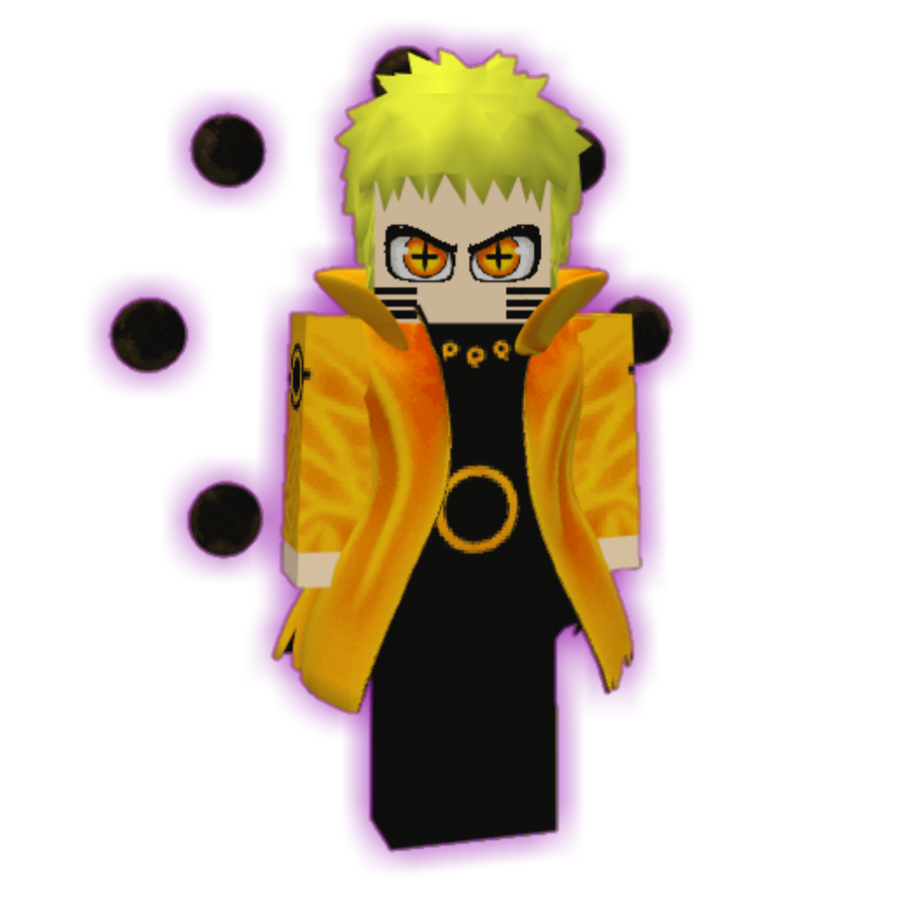

Home
Download
Contact
Creator
Bem-vindo ao Naruto 5D SoulsLike!
Uma nova e desafiadora experiência shinobi te aguarda.
Escolha sua versão e comece a jornada!

DOWNLOAD NARUTO 5D SOULSLIKE
📥 BEHAVIOR PACK
📥 RESOURCE PACK
VERSÃO ANTIGA